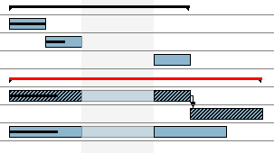
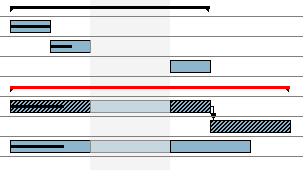
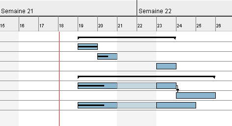

Divers
Cette section regroupe diverses fonctionnalités relatives à la gestion des tâches.
Chemin critique
GanttProject est capable d'afficher le chemin critique d'un projet dans la vue Gantt.
Cliquez sur le bouton Chemin ciritique  pour
afficher le chemin critique du projet. Les tâches critiques sont hachurées, les tâches mères critiques sont rouges.

Vous pouvez demander à ce que l'affichage du chemin critique ne soit plus actif en cliquant à nouveau sur le
bouton Chemin critique.
pour
afficher le chemin critique du projet. Les tâches critiques sont hachurées, les tâches mères critiques sont rouges.

Vous pouvez demander à ce que l'affichage du chemin critique ne soit plus actif en cliquant à nouveau sur le
bouton Chemin critique.
Alertes de retards
GanttProject peut identifier les retards qui apparaissent sur le planning. Le retard, pour GanttProject,
est défini comme suit :
une tâche est en retard si sa date de fin est antérieure ou égale à la date d'aujourd'hui et que son avancée n'est pas de 100 %.
Deux types de retards sont identifiables :
- retards normaux
 ;
;
- retards affectant les tâches critiques .
Les icônes ci-dessus, signalant les retards, apparaisent dans la colonnes Info du tableau des tâches.
N.B. : Pour être sûr de voir les retards, assurez-vous que la colonne Info est visible.
Cacher des tâches
GanttProject vous permet de cacher certaines tâches du diagramme pour plus de lisibilité. Pour ce faire, sélectionnez les tâches que vous voulez cacher, puis cliquez avec le bouton droit
dans le tableau de tâches, puis cliquez sur Cacher les tâches sélectionnées.
Pour afficher les tâches précédemment cachée, cliquez sur Afficher les tâches cachées.
Insérer des lignes séparatrices
Pour gagner en lisibilité, il est possible d'insérer des lignes séparatrices (lignes vides) dans le
tableau des tâches.
Insérer un ligne séparatrice, cliquez sur Insérer un ligne séparatrice.
Annuler/Rétablir
Désormais, GanttProject supporte l'annulation et le rétablissement d'actions (Undo/Redo). Vous pouvez utiliser au choix :
- les boutons
 et
et  ;
;
- les menus Edition, puis Annuler ou Rétablir ;
- les raccourcis clavier Crtl+Z et Ctrl+Y.
Ouvrir la fenêtre des propriétés des tâches
Par défaut, lors de la création d'une tâches vous pouvez directement entrez son nom dans le tableau. Une option permet
d'ouvrir la fenêtre de propriétés d'une tâche à sa création.
- menu Edition, Préférences ;
- option Général, Paramètres ;
- cochez la case Ouvrir la fenêtre de propriétés.
Ligne rouge pour aujourd'hui
Vous pouvez afficher une ligne verticale rouge à la datre d'ajourd'hui dans le diagramme de Gantt :

- menu Edition, Préférences ;
- option Général, Paramètres ;
- cochez la case Ligne rouge pour aujourd'hui.
Préfixe pour le nom des nouvelles tâches
Vous pouvez définir le nom par défaut des tâches lors de leur création :
- menu Edition, Préférences ;
- option Général, Paramètres ;
- éditez le champ Préfixe du nom de tâche.
Couleur par défaut d'une tâche
Vous pouvez modifier la couleur par défaut des tâches :
- menu Edition, Préférences ;
- option Général, Couleurs ;
- cliquez sur le bouton Couleur en face de Tâche ;
- choisissez la couleur par défaut désirée.
Modifier les propriétés de plusieurs tâches
Il est possible de modifier les propriétés de plusieurs tâches en une seule opération :
- sélectionnez les tâches dont vous voulez modifier les propriétés ;
- cliquez sur le bouton
 ;
;
- la fenêtre des propriétés s'ouvre ;
- modifiez les valeurs que vous voulez affecter à toutes les tâches ;
- validez.
N.B. : Uniquement les valeurs modifiées seront appliquées à toutes les tâches
sélectionnées. Les autres valeurs ne seront pas modifiées.